1What you need
- A Mac or a Windows PC. Mac: macOS 11 or newer on Apple Silicon (M1 and later). Windows: 10 or 11.
- A way into Soulseek. Either Nicotine+ (if you already use it) or a free Soulseek account that SeekSync logs in with by itself. You don't need the Soulseek app.
- Free disk space. SeekSync pauses downloads when less than 5 GB is free (you can change that).
- Optional: ffmpeg. It switches on the file checks. On a Mac:
brew install ffmpeg. Without it, files are not checked.
2Install
On a Mac
- Download the
.dmgfrom the download section or the Releases page. - Open the
.dmgand drag SeekSync to Applications. - Open SeekSync. If macOS says it can't check the app for malicious software, open System Settings, Privacy & Security, scroll down and click Open Anyway next to SeekSync. You only need to do this once.
On Windows
- Download the installer (
SeekSync-x.y.z-windows-setup.exe) and run it. - Windows may show a SmartScreen warning. Click More info, then Run anyway.
- Choose whether to add a desktop shortcut and whether SeekSync should start when you log in.
3First start
The first time you open SeekSync you see one screen with three steps. When you are done, click Start watching.
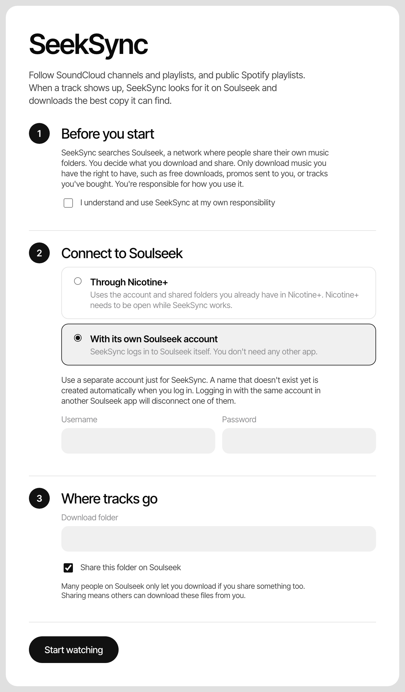
- Before you start. Tick the box to say you understand that you decide what you download and share.
- Connect to Soulseek. Choose Through Nicotine+ or With its own Soulseek account. Both are explained in the next section.
- Where tracks go. Pick the download folder (by default a folder called SeekSync in your Music folder). The box Share this folder on Soulseek is on by default: many people on Soulseek only let you download if you share something too. Sharing means others can download the files in that folder from you. Untick it if you don't want that.
4Connect to Soulseek
You can change this at any time under Settings, Soulseek, Connect.
Option A: through Nicotine+
Best if you already use Nicotine+: SeekSync uses your account and your shared folders. This is also the most thoroughly tested route.
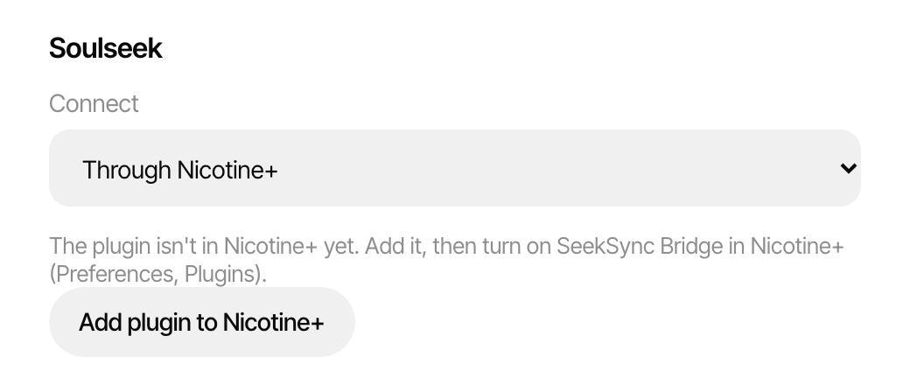
- Install Nicotine+ and log in to Soulseek there.
- In SeekSync click Add plugin to Nicotine+. This copies a small plugin into Nicotine+. It only listens on your own computer and only accepts SeekSync's key.
- In Nicotine+ open Preferences, Plugins and switch on SeekSync Bridge. If it isn't in the list, close Preferences and open it again, or restart Nicotine+.
- Keep Nicotine+ open while SeekSync works. Searches don't create tabs or history in Nicotine+, and downloads show up in its Downloads tab.
Option B: with its own account
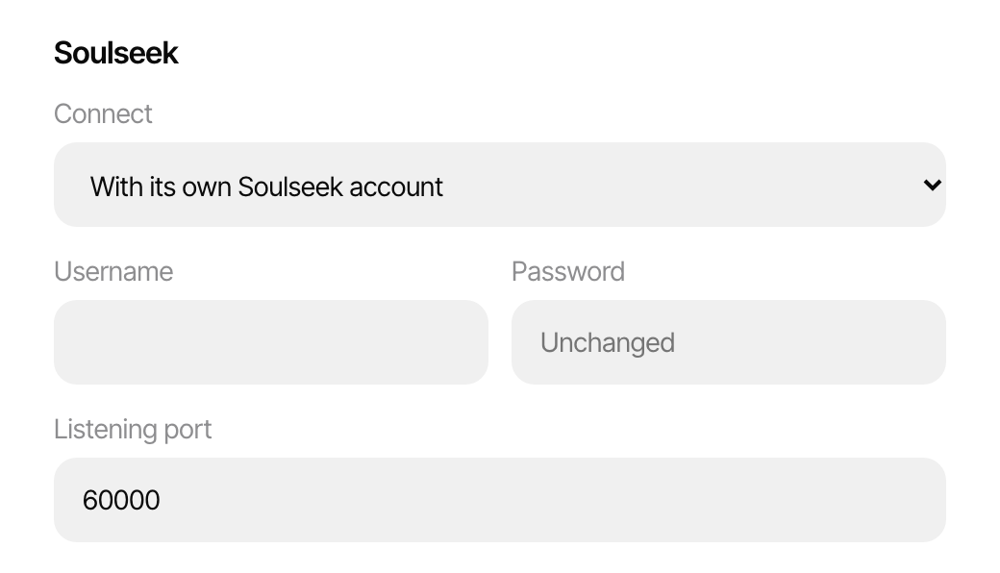
- Username and password
- Use a separate account just for SeekSync. A name that doesn't exist yet is created automatically the first time you log in. If you log in with the same account in another Soulseek app, one of the two gets disconnected. The password field shows Unchanged when one is saved.
- Listening port
- The port other users connect to for transfers (default 60000). Leave it as it is unless something else uses it. Where your router allows it, SeekSync opens the port by itself.
5Add channels and playlists
Paste a link into the field at the top left, under Add a channel or playlist. SeekSync understands:
- A SoundCloud profile: a label, an artist, a promo or repost channel. Paste
soundcloud.com/nameor just the name. - A SoundCloud playlist (
soundcloud.com/name/sets/…). Private playlist links that end in/s-xxxxwork too. - A public Spotify playlist. Spotify only shows the first 100 tracks of a playlist, and private playlists or Liked Songs can't be read.
Short links (on.soundcloud.com, spotify.link), single tracks and albums are not supported: open the page and copy the full link of the profile or playlist.
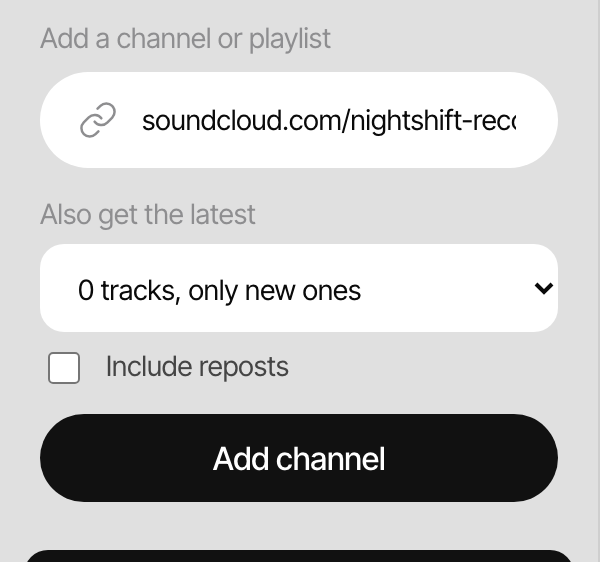
- Also get the latest
- For a profile: by default only new uploads from now on are fetched. Choose 5, 10 or 25 to also fetch that many of the most recent tracks.
- Include reposts
- Also follow what the profile reposts, not only what it uploads.
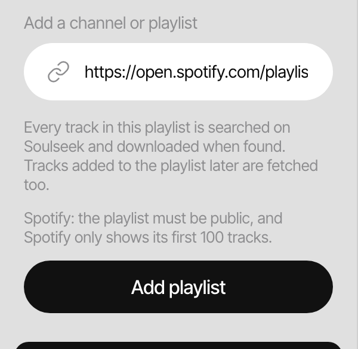
For a playlist every track in it is wanted, in the order of the playlist, and tracks added to the playlist later are fetched too. SeekSync checks every channel once an hour (change this under Settings, Schedule).
The top bar and the sidebar
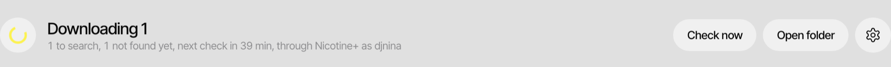
- The status line says what SeekSync is doing, for example Downloading 1, how many tracks wait to be searched or are not found yet, when the next check is, and how you are connected.
- Check now looks at all your channels right away. Open folder opens your download folder. The gear opens Settings. A yellow Get version x button appears when a new version is out.
- The sidebar lists your channels with when they were last checked and how many tracks are in progress. A red line under a channel is an error, such as SoundCloud is blocking requests right now; it usually clears by itself, so try again in a few minutes. All channels shows everything together.
- Activity at the bottom left opens a log of what just happened.
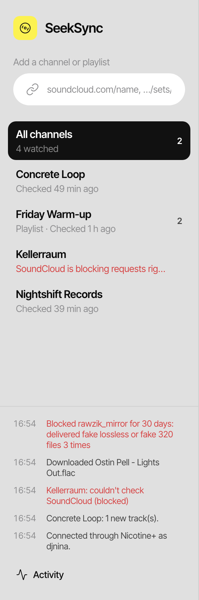
6The track list
Every track SeekSync wants shows up in the list with a status. The tabs above the list filter it: All, In progress, Downloaded, In collection, Not found yet, Skipped, Quarantine, Duplicates.
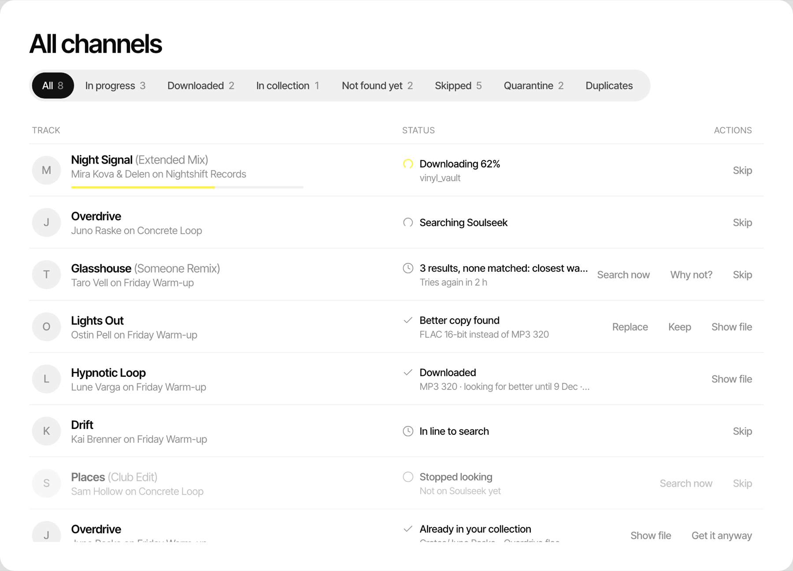
| Status | What it means |
|---|---|
| In line to search | The track is waiting its turn. Searches are spaced out on purpose. |
| Searching Soulseek | SeekSync is searching right now and scoring the results. |
| Waiting for peer | A copy was chosen but the other user has a queue. It shows your place in line. After 45 minutes SeekSync tries another user. |
| Downloading 62% | The file is coming in, with the name of the user it comes from. |
| Not found yet | Nothing good was found. SeekSync tries again after 1, 3, 6 and 12 hours, then daily, until the time set under Settings, Schedule (30 days by default). The reason is shown, for example 3 results, none matched. |
| Downloaded | Done. It shows the quality (such as FLAC 16-bit or MP3 320), where the audio stops (such as 21 kHz) and the file name. Looking for better until … means SeekSync still searches for a better copy. |
| Better copy found | A better file than the one you have turned up. You choose: Replace or Keep. |
| Already in your collection | You already own this track (see Your collection), so it isn't downloaded again. |
| Skipped | Your rules (or the blocklist) said no. The reason is shown, and you can still get it with Get it. |
| Stopped looking | The time ran out, or you pressed Stop looking. Search now starts again. |
The buttons on a row
- Search now
- Search again right away, without waiting for the next try.
- Why not?
- Shows what was searched and why files were rejected. See the next section.
- Skip
- Stop looking for this track.
- Show file
- Shows the finished file in Finder or Explorer.
- Replace / Keep
- For a better copy: replace your file (the old one goes to SeekSync's trash for 30 days) or keep what you have.
- Get it / Get it anyway
- Fetch a track that was skipped by a rule, or that you already own.
7When a track isn't found
Click Why not? on a track that wasn't found. SeekSync doesn't hide its reasoning:
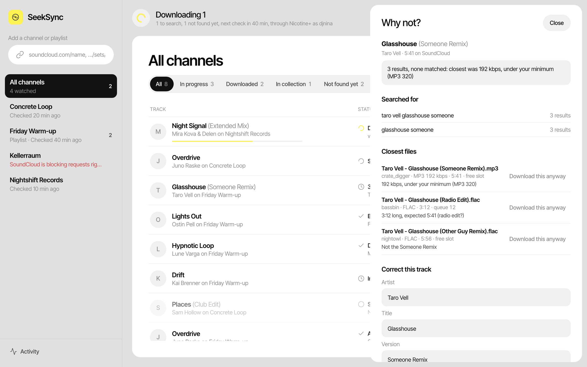
- The summary in one line, such as 3 results, none matched: closest was 192 kbps, under your minimum (MP3 320).
- Searched for: the search terms and how many results each gave.
- Closest files: the nearest candidates with the reason each was rejected (too short, a radio edit, another remix, too low a quality). Download this anyway fetches one of them. It still goes through the file checks.
- Correct this track: if SeekSync misread the artist, title or version, fix it here. Your correction wins over the automatic reading.
- Search with another term is tried before the automatic searches from then on. Stop looking gives up on the track.
SeekSync is strict on purpose: an original is never replaced by a remix, and a radio edit, dub, VIP or someone else's remix is never taken for the version you want. Original and Extended go together.
8Rules per channel
Click a channel in the sidebar. Above its tracks you see a bar with the link and four buttons.
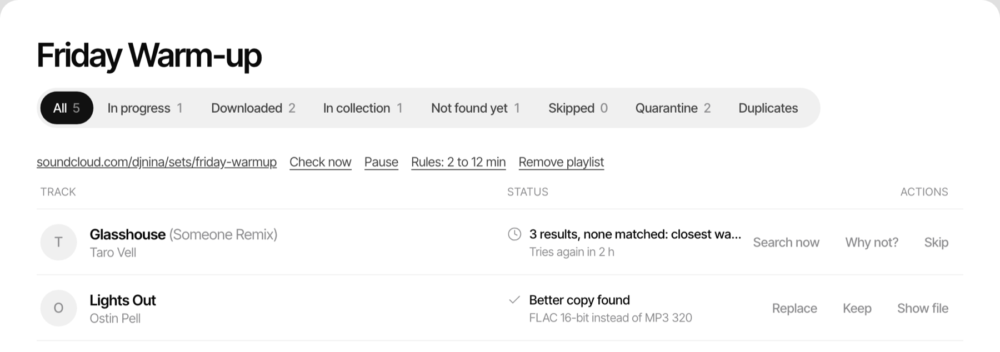
- Check now: check just this channel.
- Pause: stop following it for a while.
- Rules: what gets fetched from this channel (below).
- Remove: stop following it. Files you already have stay where they are.
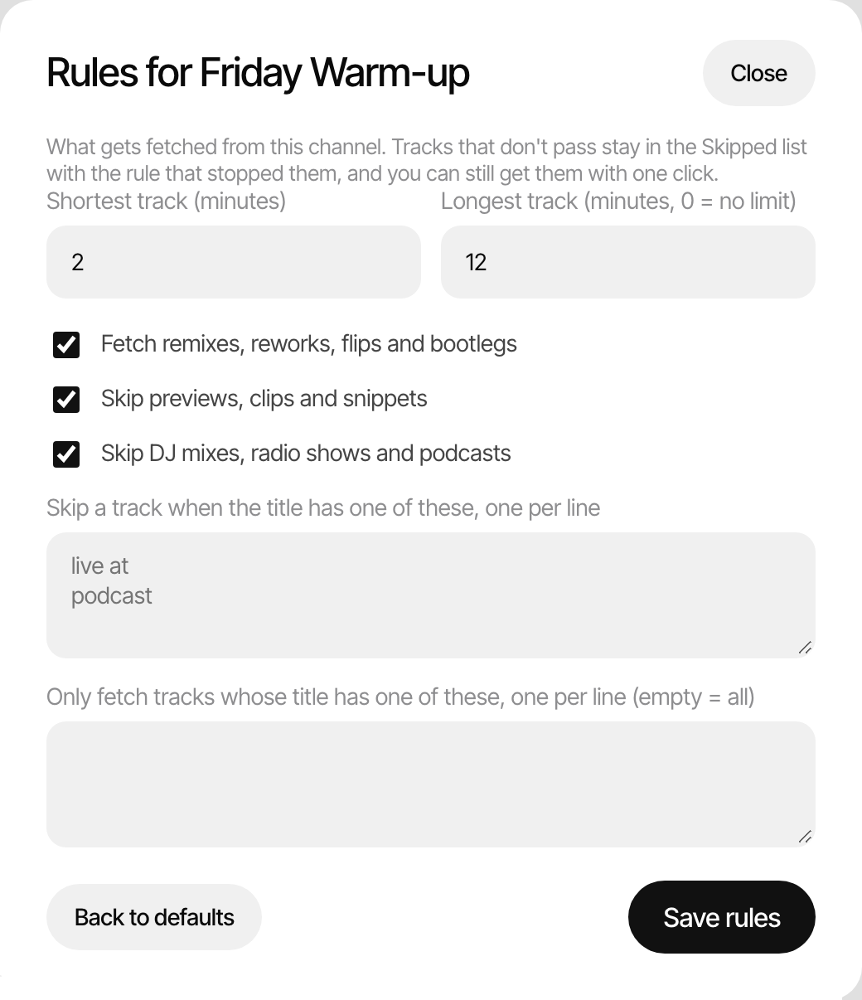
- Shortest / longest track
- By default 2 to 12 minutes. Enter 0 as the longest for no limit. A label channel and a mix channel need different numbers.
- Fetch remixes, reworks, flips and bootlegs
- On by default. VIP, dub and edit versions are always allowed.
- Skip previews, clips and snippets
- On by default.
- Skip DJ mixes, radio shows and podcasts
- On by default. Switch it off for a channel that only posts mixes.
- Include reposts
- Only for profiles.
- Skip a track when the title has one of these
- One word or phrase per line, for example
live atorpodcast. - Only fetch tracks whose title has one of these
- One per line. Empty means everything.
Tracks that don't pass stay in the Skipped tab with the rule that stopped them, so you can still get one with a click. If you change the rules, tracks that now pass come back, and tracks that haven't been searched yet and no longer pass are skipped. Downloads, tracks in progress and tracks you skipped yourself are left alone. Back to defaults resets the rules.
Rules for everything at once (blocked words and artists) live under Settings, Blocklist, and they win over a channel's rules.
9Settings, one by one
Open Settings with the gear at the top right. Change what you like and click Save settings at the bottom. The sections follow the order of the screen.
Soulseek and Files
Soulseek is covered in Connect to Soulseek. Under Files you set the Download folder: where finished tracks are placed. Use Choose… to pick it. Unfinished files are kept in a separate working area and only move to your folder once they passed every check.
Names and tags
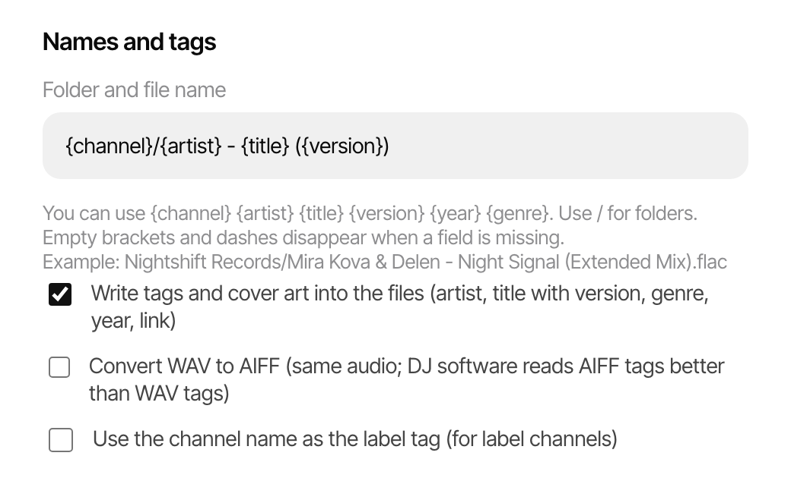
- Folder and file name
- A template with these pieces:
{channel}{artist}{title}{version}{year}{genre}. Use/for folders. The default is{channel}/{artist} - {title} ({version}), which gives Nightshift Records/Mira Kova - Night Signal (Extended Mix).flac. Empty brackets and dashes disappear when a field is missing. A live example is shown under the field. - Write tags and cover art
- On by default. Every finished file gets artist, title with the version, genre, year, the link and a 500 px cover (MP3 ID3v2.3, FLAC, AIFF, M4A). BPM and key tags the uploader embedded stay. Spotify tracks get the album cover (640 px) and the year, but no genre, because Spotify's page doesn't give one.
- Convert WAV to AIFF
- Off by default. Same audio, but DJ software reads the tags of AIFF files better than those of WAV files.
- Use the channel name as the label tag
- Off by default. Useful for label channels: the label tag then holds the name of the channel.
- Fill in missing covers
- A button. Every downloaded file without a cover (or with a broken one) gets one from SoundCloud or Spotify. Only the picture is added: the other tags, the name and the audio stay as they are. Useful for files from before version 0.6.2, and for tracks whose cover couldn't be downloaded at the time.
Sharing
With its own account: Share the download folder on Soulseek and a box for other shared folders, one per line. Through Nicotine+: sharing is set up in Nicotine+. SeekSync warns you at the top when you share nothing, because many users block people who share nothing.
File checks
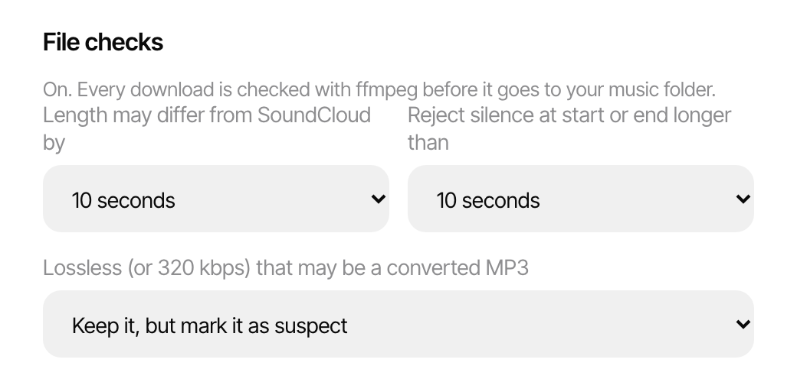
Needs ffmpeg (the line at the top says whether the checks are on). Every download is checked before it reaches your music folder.
- Length may differ from SoundCloud by
- 5, 10 (default), 20 or 30 seconds. An Extended version may be longer than the original upload.
- Reject silence at start or end longer than
- 5, 10 (default), 20 or 30 seconds.
- Lossless (or 320 kbps) that may be a converted MP3
- SeekSync reads the spectrum of each file. A fake lossless file stops at a hard cutoff around 16 to 19 kHz. Choose Keep it, but mark it as suspect (default) or Reject it and look for another copy. A file that is clearly fake is always rejected.
Quality
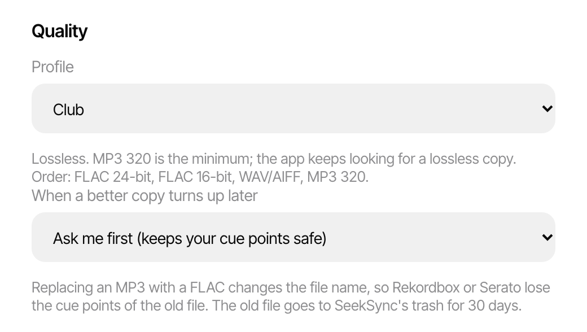
| Profile | What you get |
|---|---|
| Club (default) | Lossless (FLAC 24-bit, FLAC 16-bit, WAV). MP3 320 is the minimum; SeekSync keeps looking for a lossless copy. |
| Balanced | MP3 320 or better. MP3 256 is the minimum. |
| Space saver | MP3 320 or 256; MP3 192 is the minimum. Lossless only if there is nothing else. |
When a better copy turns up later: if a track first arrives below your goal (say MP3 320 while you want lossless), SeekSync keeps looking for 30 days. You choose what happens when it finds one:
- Ask me first (default): you see Better copy found with Replace and Keep. This keeps your cue points safe.
- Replace the file right away.
- Replace right away, but ask for tracks that are in Rekordbox: see Rekordbox.
- Don't look for better copies.
Blocklist
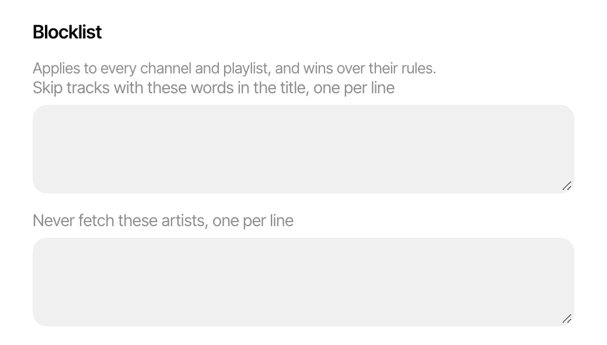
Applies to every channel and playlist and wins over their rules. Skip tracks with these words in the title and Never fetch these artists, one per line.
Soulseek etiquette
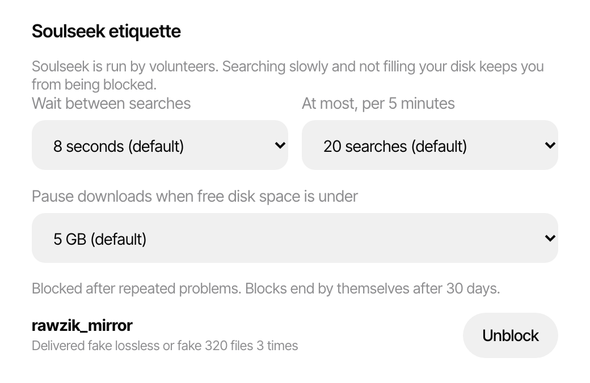
Soulseek is run by volunteers. Searching slowly and not filling your disk keeps you from being blocked. The choices are limited on purpose: the wait between searches can never go below a few seconds.
- Wait between searches
- 8 seconds (default), 12, 20 or 30.
- At most, per 5 minutes
- 10, 20 (default), 30 or 40 searches.
- Pause downloads when free disk space is under
- 5 GB by default (or never). A notice appears at the top while downloads are paused, and they continue by themselves when there is room again.
- Blocked users
- Users who repeatedly sent fake files or failed are scored lower and, after repeated problems, blocked for 30 days. They appear in a list with an Unblock button.
Schedule and Artists
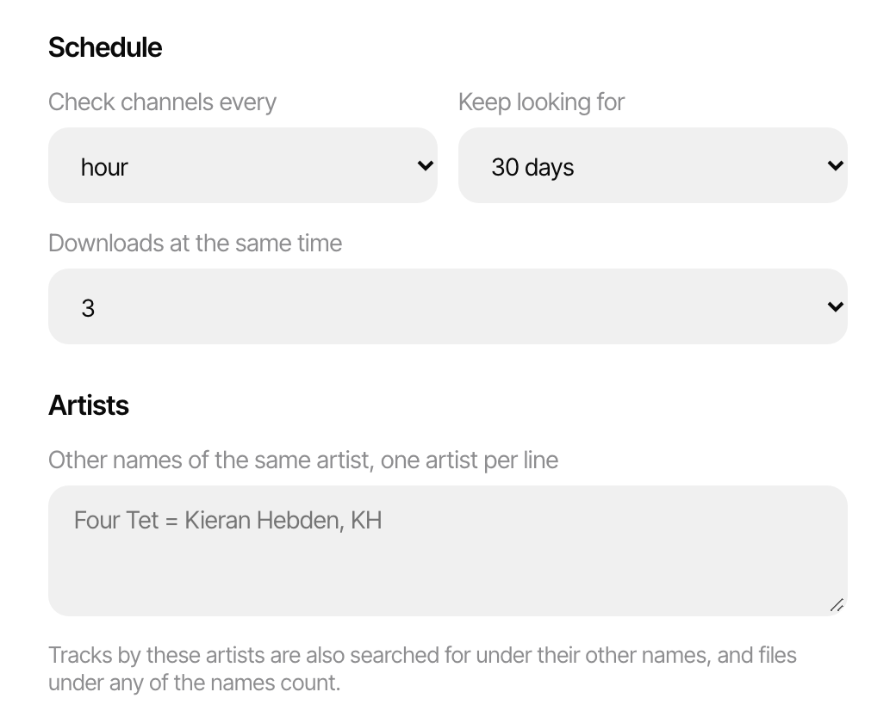
- Check channels every
- 30 minutes, an hour (default), 3 hours, 6 hours or a day. SeekSync only checks while the app is open.
- Keep looking for
- 1 week, 30 days (default), 90 days or a year. After that a track becomes Stopped looking.
- Downloads at the same time
- 1, 2, 3 (default) or 5.
- Other names of the same artist
- For producers with several names. One line per artist, for example
Four Tet = Kieran Hebden, KH. Tracks by that artist are also searched under the other names, and a file under any of the names counts.
Collection, Rekordbox and Updates
These three have their own sections below: Your collection, Rekordbox and Updating.
10Your collection and duplicates
SeekSync can see which tracks you already own, so it doesn't download them again, even when they have a slightly different name or come from another channel.
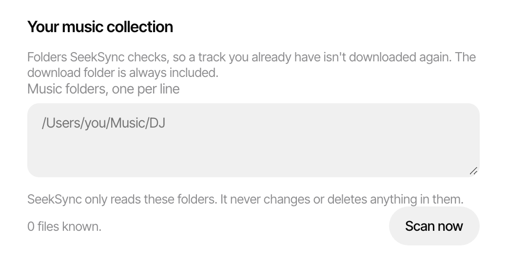
- Open Settings, Your music collection.
- Add your music folders, one per line, or use Add folder… to pick one. Subfolders are included. Your download folder always counts.
- Click Save settings and then Scan now. The first scan reads every file; later scans only read what is new or changed, so they are quick. A folder on a drive that isn't connected keeps what was known about it.
SeekSync only reads these folders. It never changes or deletes anything in them.
A track counts as already owned when the title, artist (aliases count) and version match, and the length is not very different. A remix is never mistaken for the original. Such a track gets the status Already in your collection and is listed under the In collection tab, with Show file and Get it anyway.
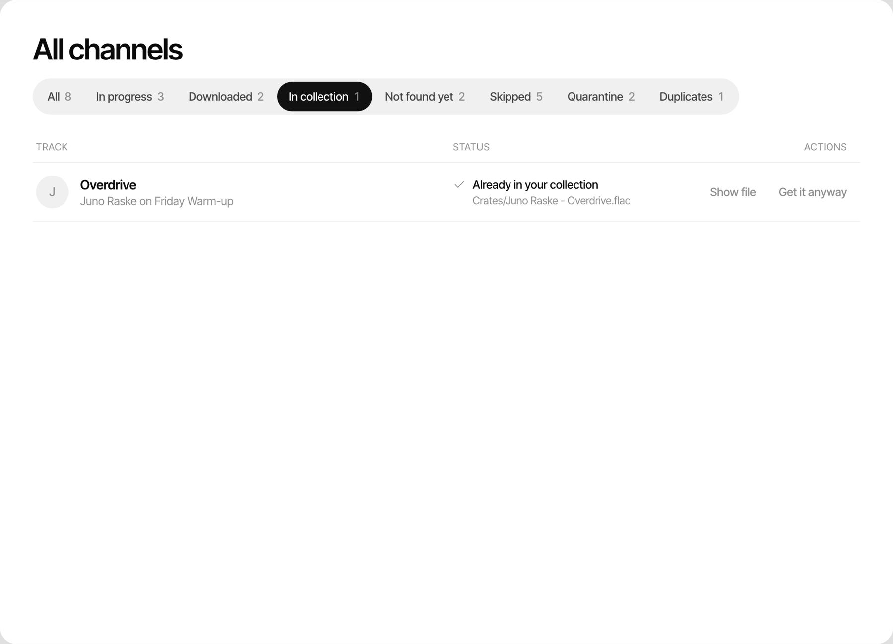
Duplicates
The Duplicates tab lists files in your download folder that are the same track (same artist, title and version), with the best copy marked Best according to your quality profile. Nothing is deleted or moved: you decide.
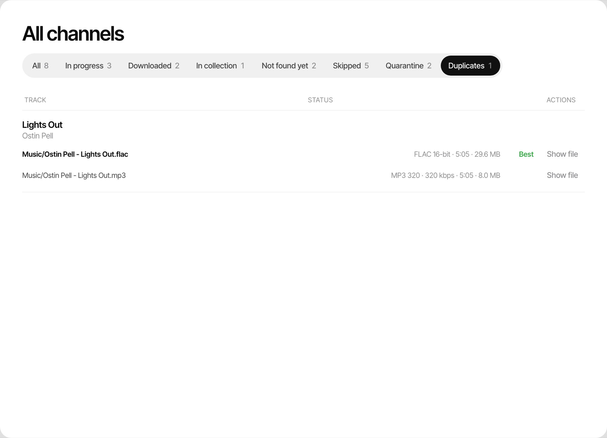
11Quarantine
When a downloaded file fails a check, it doesn't reach your music folder. It goes to Quarantine with the reason, and SeekSync looks for another copy from another user. That file and that user are not used again for this track.
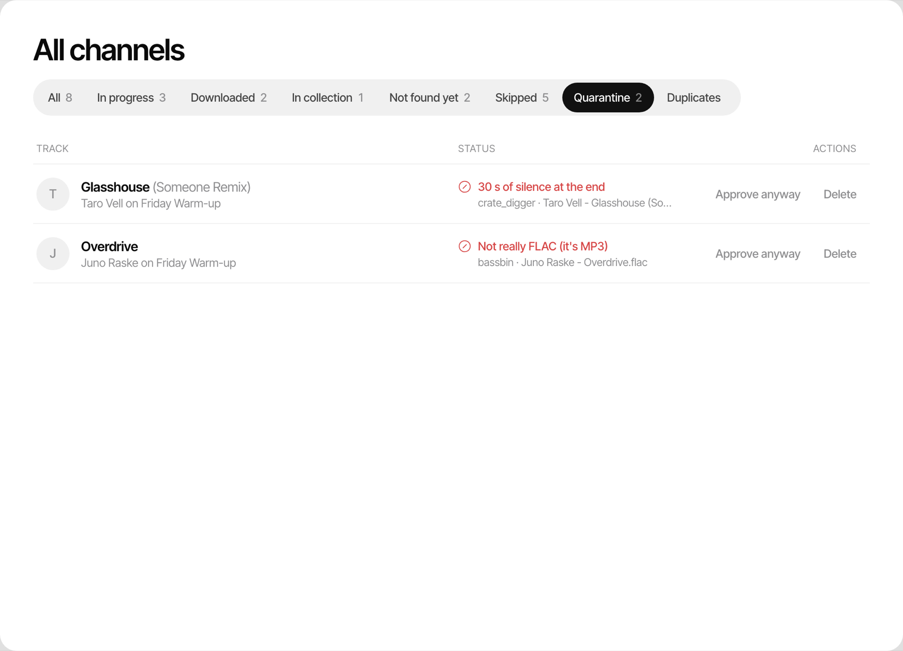
Every download must: play all the way through, be the format its name says (no MP3 renamed to .flac), be about as long as the original, not start or end with a long silence, and not be a converted lossless file. You can Approve anyway (the file continues to your folder) or Delete it.
12Rekordbox
SeekSync can write a Rekordbox XML file with every track it downloaded and a playlist for each channel or playlist, inside a folder called SeekSync. SeekSync only writes this one file and never touches Rekordbox' own library.
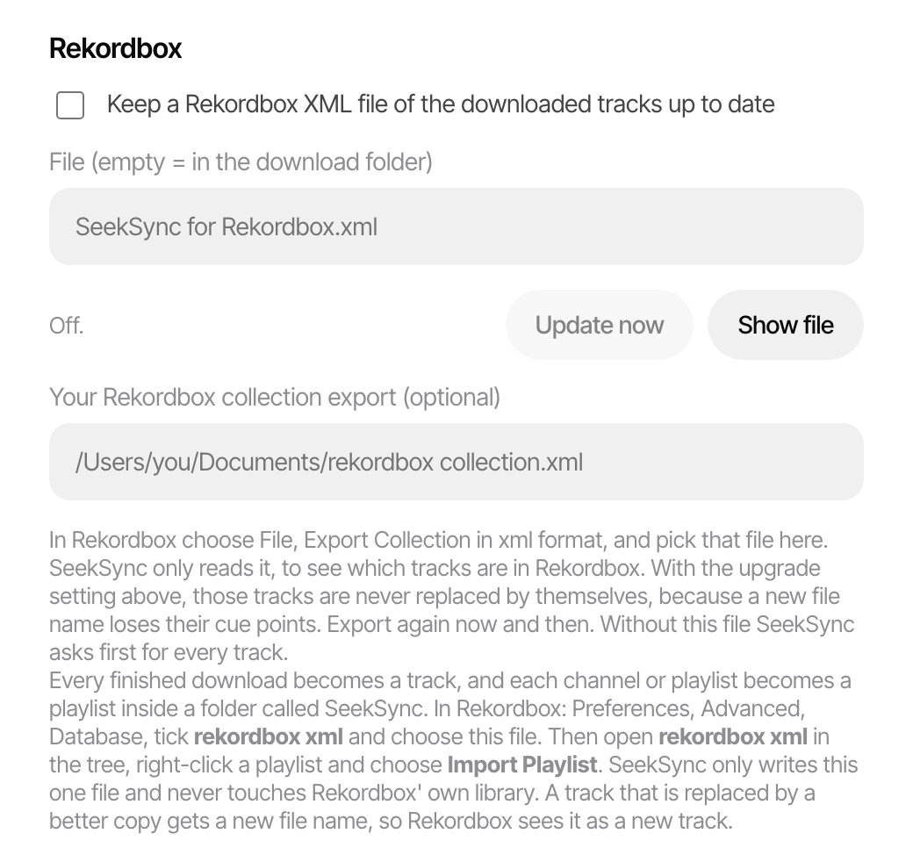
Step by step
- In SeekSync open Settings, Rekordbox and tick Keep a Rekordbox XML file of the downloaded tracks up to date.
- The file is called
SeekSync for Rekordbox.xmland lives in your download folder (or where you point it). It is rewritten about 30 seconds after a download. Update now writes it immediately and Show file shows it. - In Rekordbox open Preferences, Advanced, Database, tick rekordbox xml and choose that file.
- In the tree open rekordbox xml, right-click a playlist and choose Import Playlist.
Keep your cue points safe
A better copy of a track gets a new file name, and Rekordbox sees that as a new track without your cue points. To prevent a surprise, let SeekSync read an export of your Rekordbox collection:
- In Rekordbox choose File, Export Collection in xml format and save the file.
- In SeekSync pick that file under Your Rekordbox collection export. SeekSync only reads it. Export again now and then.
- Under Quality choose Replace right away, but ask for tracks that are in Rekordbox. Tracks in your Rekordbox are then never replaced by themselves, and the list shows in Rekordbox next to them. Without the export file, SeekSync asks first for every track.
Only Rekordbox is connected so far. Serato crates, M3U playlists and Traktor are not built yet, but the files and their tags work in any DJ software.
13Updating
SeekSync asks GitHub twice a day whether a new version is out, and tells you with a yellow Get version x button. You can also look right away under Settings, Updates, Check now.
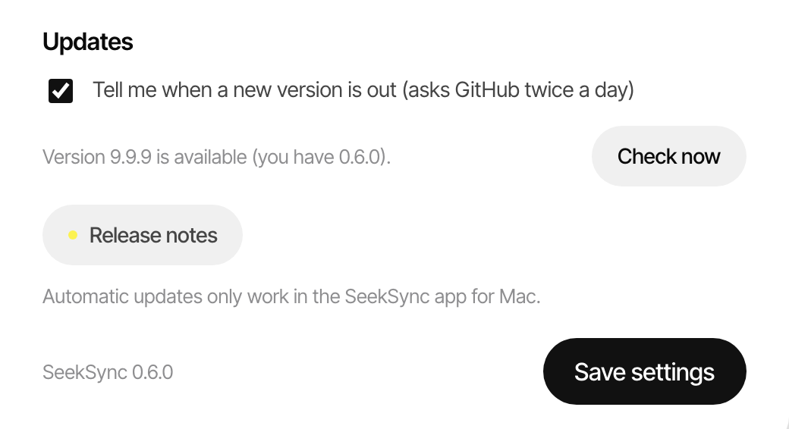
- On a Mac click Install and restart. SeekSync downloads the new version, checks it, replaces itself and starts again. The old app is kept in a folder called
previous-versionsin the app data (the last two). - On Windows click Install and restart too. SeekSync downloads the installer, checks it, closes itself, runs the installer quietly over the old version and starts again.
- When SeekSync can't change its own folder, use the release page: download the new installer and run it over the old one.
- Your channels and settings are kept either way. Switch the notice off with the box Tell me when a new version is out.
14Troubleshooting
- “Can't reach Nicotine+”
- Open Nicotine+ and check that SeekSync Bridge is switched on (Preferences, Plugins). After an update, turn the plugin off and on once.
- A track stays at “Waiting for peer”
- The other user has a queue. After 45 minutes SeekSync tries another user.
- “Not found yet” for a track you can find by hand
- Title matching is strict on purpose. Open Why not?: the closest files and their reasons tell you why. Correct the artist, title or version, or download one anyway. If it still looks wrong, open an issue on GitHub with the link and the file name you found.
- “SoundCloud is blocking requests right now”
- SoundCloud limits how often a program may ask. It usually clears by itself within minutes; SeekSync tries again at the next check.
- “Downloads paused”
- Free disk space is below the limit under Settings, Soulseek etiquette. Free some space; downloads continue by themselves.
- “Nothing shared”
- You are not sharing a folder, and many Soulseek users block people who share nothing. Share a folder (see Connect to Soulseek).
- Files aren't being checked
- Install ffmpeg (on a Mac:
brew install ffmpeg) and restart SeekSync. Settings, File checks says whether the checks are on.
Still stuck? Open an issue on GitHub and attach seeksync.log (see below).
15Your data and privacy
- Your music goes to the download folder you chose (by default
Music/SeekSync). - Settings, database and temporary folders are in
~/Library/Application Support/SeekSyncon a Mac and%LOCALAPPDATA%\SeekSyncon Windows. - The log is
seeksync.log: on a Mac in~/Library/Logs/SeekSync, on Windows in the SeekSync folder under%LOCALAPPDATA%. Attach it to bug reports. - Privacy: everything stays on your computer. SeekSync talks to SoundCloud and Spotify (to read channels and playlists), to Soulseek (directly or through Nicotine+) and, twice a day, to GitHub (to see if there is a new version; you can turn that off). There is no tracking and there are no analytics.
Ready?
Download SeekSync, add your first channel and let it work.